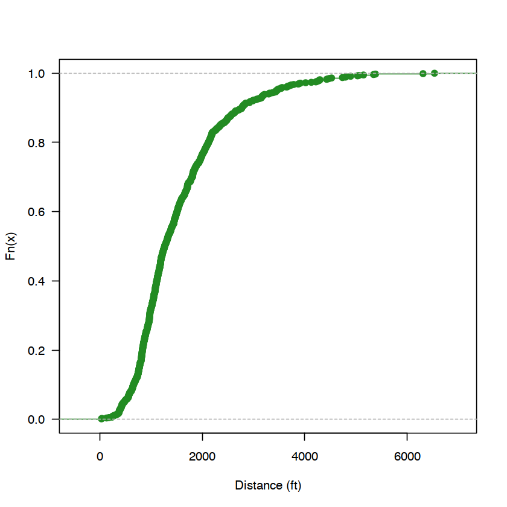
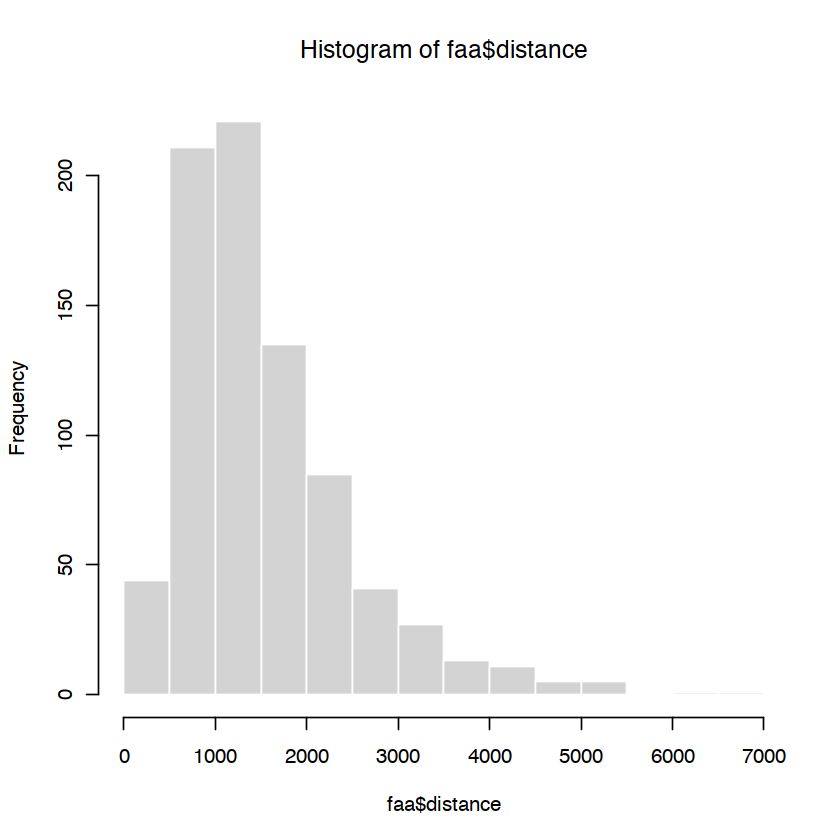
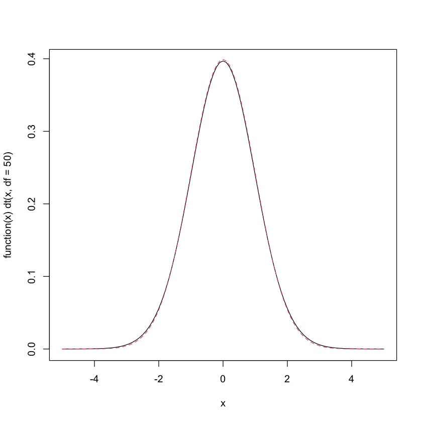
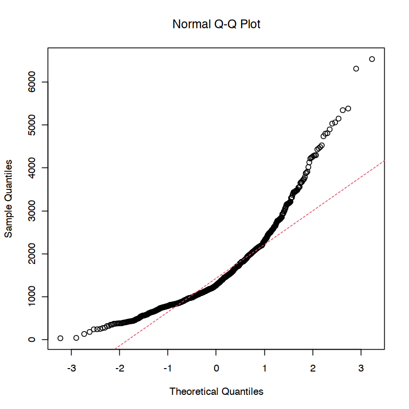
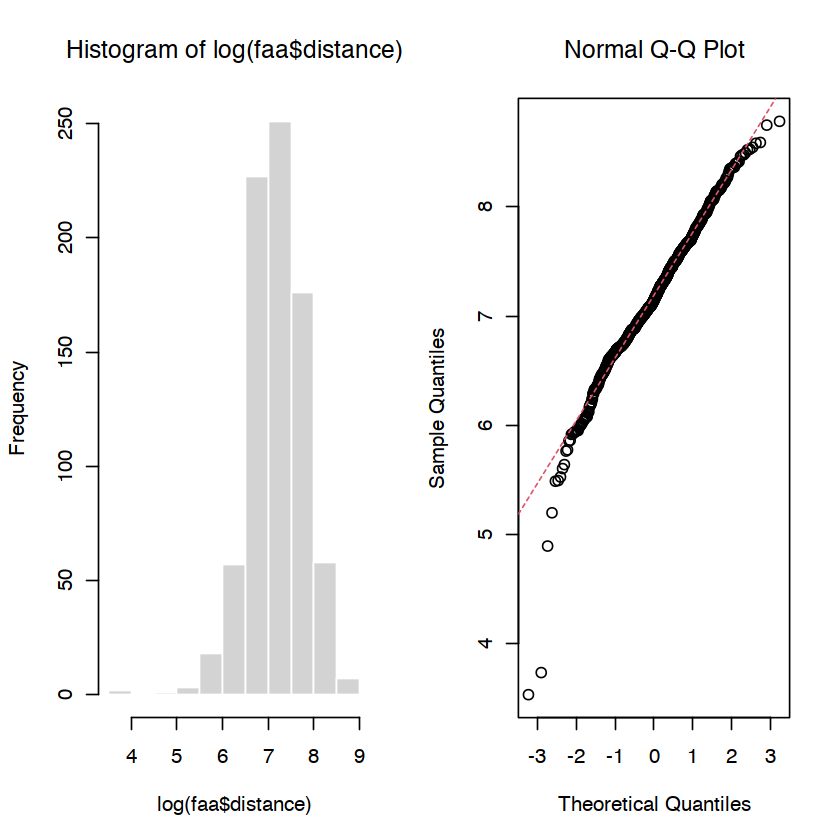
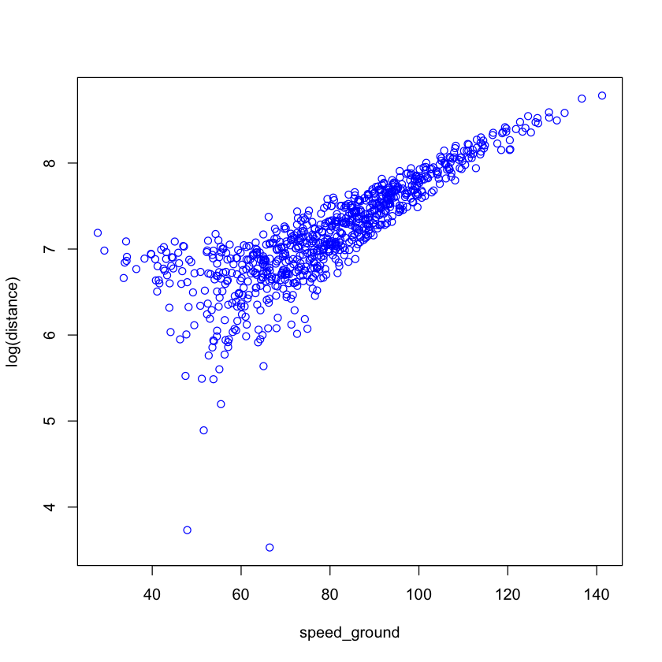
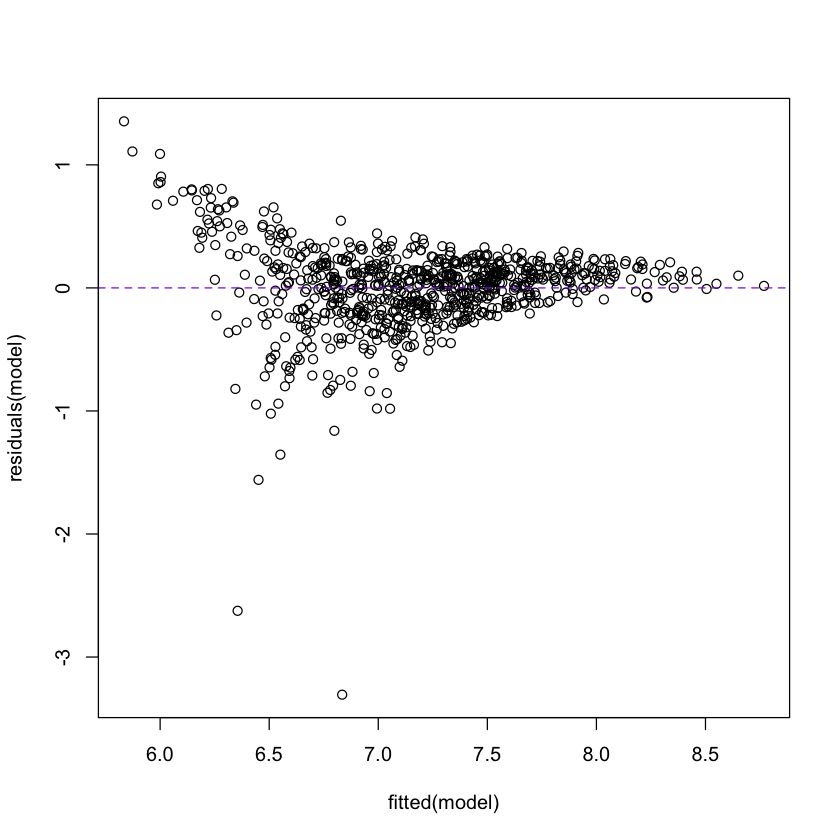
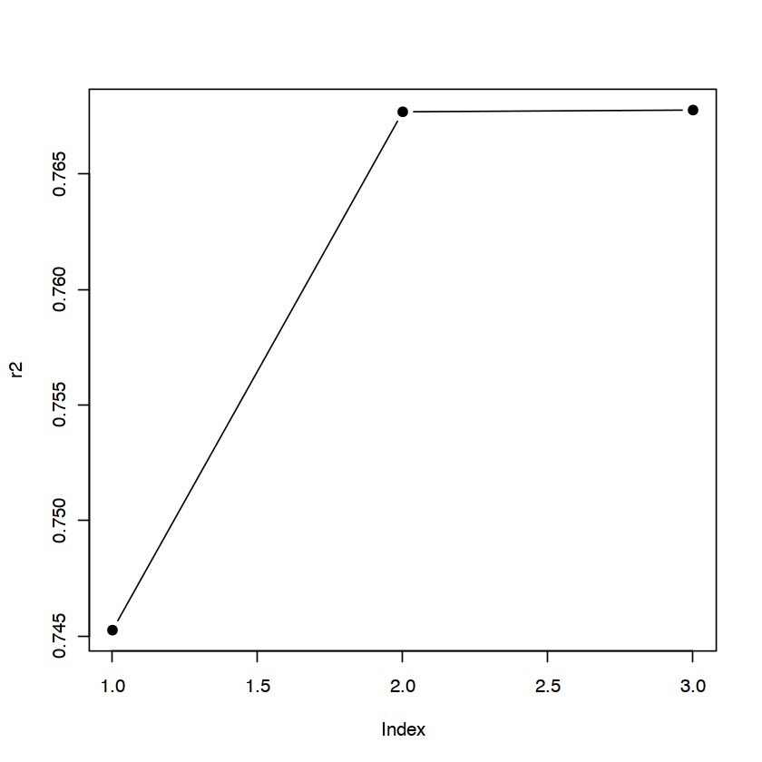
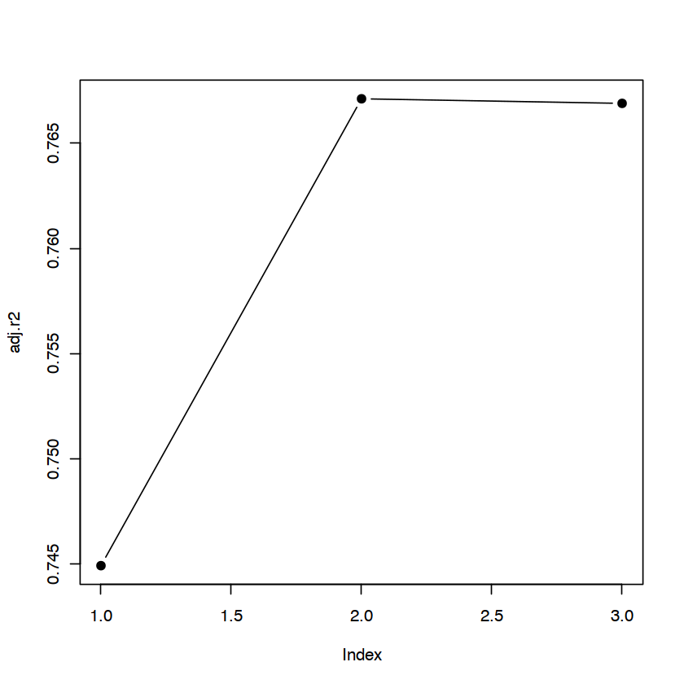

faa <- read.csv("../homework/homework-1/FAA1.csv", header = TRUE, stringsAsFactors = TRUE) # read in datahead(faa, n = 5) # print fisrt five rows| aircraft | duration | no_pasg | speed_ground | speed_air | height | pitch | distance | |
|---|---|---|---|---|---|---|---|---|
| <fct> | <dbl> | <int> | <dbl> | <dbl> | <dbl> | <dbl> | <dbl> | |
| 1 | boeing | 98.47909 | 53 | 107.91568 | 109.3284 | 27.41892 | 4.043515 | 3369.836 |
| 2 | boeing | 125.73330 | 69 | 101.65559 | 102.8514 | 27.80472 | 4.117432 | 2987.804 |
| 3 | boeing | 112.01700 | 61 | 71.05196 | NA | 18.58939 | 4.434043 | 1144.922 |
| 4 | boeing | 196.82569 | 56 | 85.81333 | NA | 30.74460 | 3.884236 | 1664.218 |
| 5 | boeing | 90.09538 | 70 | 59.88853 | NA | 32.39769 | 4.026096 | 1050.264 |
table(sapply(faa, class))
factor integer numeric
1 1 6 str(faa) # display (str)ucture of an arbitrary object'data.frame': 800 obs. of 8 variables:
$ aircraft : Factor w/ 2 levels "airbus","boeing": 2 2 2 2 2 2 2 2 2 2 ...
$ duration : num 98.5 125.7 112 196.8 90.1 ...
$ no_pasg : int 53 69 61 56 70 55 54 57 61 56 ...
$ speed_ground: num 107.9 101.7 71.1 85.8 59.9 ...
$ speed_air : num 109 103 NA NA NA ...
$ height : num 27.4 27.8 18.6 30.7 32.4 ...
$ pitch : num 4.04 4.12 4.43 3.88 4.03 ...
$ distance : num 3370 2988 1145 1664 1050 ...dim(faa)- 800
- 8
summary(faa) # print summary of data frame aircraft duration no_pasg speed_ground
airbus:400 Min. : 14.76 Min. :29.00 Min. : 27.74
boeing:400 1st Qu.:119.49 1st Qu.:55.00 1st Qu.: 65.87
Median :153.95 Median :60.00 Median : 79.64
Mean :154.01 Mean :60.13 Mean : 79.54
3rd Qu.:188.91 3rd Qu.:65.00 3rd Qu.: 92.33
Max. :305.62 Max. :87.00 Max. :141.22
speed_air height pitch distance
Min. : 90.00 Min. :-3.546 Min. :2.284 Min. : 34.08
1st Qu.: 96.16 1st Qu.:23.338 1st Qu.:3.658 1st Qu.: 900.95
Median :100.99 Median :30.147 Median :4.020 Median :1267.44
Mean :103.83 Mean :30.122 Mean :4.018 Mean :1544.52
3rd Qu.:109.48 3rd Qu.:36.981 3rd Qu.:4.388 3rd Qu.:1960.44
Max. :141.72 Max. :59.946 Max. :5.927 Max. :6533.05
NA's :600 (edf <- ecdf(faa[, "distance"])) structure(function (v)
.approxfun(x, y, v, method, yleft, yright, f, na.rm), class = c("ecdf",
"stepfun", "function"), call = ecdf(faa[, "distance"]))(x <- 3)
3
summary(edf)Empirical CDF: 800 unique values with summary
Min. 1st Qu. Median Mean 3rd Qu. Max.
34.08 900.95 1267.44 1544.52 1960.44 6533.05 plot(edf, col = "forestgreen", xlab = "Distance (ft)", main = "", las = 1)
edf(2000) # estimate of Pr(landing distance <= 2000 ft)
0.76375
hist(faa$distance, border = "white")
shapiro.test(faa$distance)
Shapiro-Wilk normality test
data: faa$distance
W = 0.87205, p-value < 2.2e-16x1 <- rt(5000, df = 50)
x2 <- rt(10, df = 50)
shapiro.test(x1)
shapiro.test(x2)
Shapiro-Wilk normality test
data: x1
W = 0.99918, p-value = 0.0184
Shapiro-Wilk normality test
data: x2
W = 0.95002, p-value = 0.6687plot(function(x) dt(x, df = 50), xlim = c(-5, 5)) # t-distribution with 50 d.f.
curve(dnorm, lty = 2, col = 2, add = TRUE) # standard normal distribution
qqnorm(faa$distance)
qqline(faa$distance, col = 2, lty = 2)
par(mfrow = c(1, 2))
hist(log(faa$distance), border = "white")
qqnorm(log(faa$distance))
qqline(log(faa$distance), col = 2, lty = 2)
(model <- lm(distance ~ speed_ground, data = faa))
Call:
lm(formula = distance ~ speed_ground, data = faa)
Coefficients:
(Intercept) speed_ground
-1804.87 42.11 summary(model)
Call:
lm(formula = distance ~ speed_ground, data = faa)
Residuals:
Min 1Q Median 3Q Max
-957.96 -323.26 -82.72 207.20 2391.37
Coefficients:
Estimate Std. Error t value Pr(>|t|)
(Intercept) -1804.8738 71.3171 -25.31 <2e-16 ***
speed_ground 42.1088 0.8715 48.32 <2e-16 ***
---
Signif. codes: 0 ‘***’ 0.001 ‘**’ 0.01 ‘*’ 0.05 ‘.’ 0.1 ‘ ’ 1
Residual standard error: 473.8 on 798 degrees of freedom
Multiple R-squared: 0.7453, Adjusted R-squared: 0.7449
F-statistic: 2335 on 1 and 798 DF, p-value: < 2.2e-16predict(model, newdata = faa[1:3, ])- 1
- 2739.32716360054
- 2
- 2475.72215982846
- 3
- 1187.03979321476
plot(log(distance) ~ speed_ground, data = faa, col = "blue")
#abline(lm(log(distance) ~ speed_ground, data = faa), lwd = 2)
plot(fitted(model), residuals(model)); abline(h = 0, lty = 2, col = "purple2")
sigma(model)head(predict(model, newdata = faa[1:3, ]))head(fitted(model))qqnorm(residuals(model))
all.equal(residuals(model), faa$distance - predict(model))logd <- log(faa$distance) # log transform
hist(logd, breaks = 20)(t.obs <- (mean(logd) - 6) / (sd(logd) / sqrt(length(logd) - 1))) # (xbar - mu) / (s / sqrt(n)) (p.val <- 2 * pt(t.obs, df = length(logd) - 1, lower.tail = FALSE)) # 2 * Pr(T > |t.obs|)model2 <- lm(distance ~ speed_ground + height, data = faa)
summary(model2)
Call:
lm(formula = distance ~ speed_ground + height, data = faa)
Residuals:
Min 1Q Median 3Q Max
-770.11 -338.13 -61.38 172.99 2477.18
Coefficients:
Estimate Std. Error t value Pr(>|t|)
(Intercept) -2221.6518 83.0683 -26.745 <2e-16 ***
speed_ground 42.1691 0.8328 50.636 <2e-16 ***
height 13.6771 1.5588 8.774 <2e-16 ***
---
Signif. codes: 0 ‘***’ 0.001 ‘**’ 0.01 ‘*’ 0.05 ‘.’ 0.1 ‘ ’ 1
Residual standard error: 452.8 on 797 degrees of freedom
Multiple R-squared: 0.7677, Adjusted R-squared: 0.7671
F-statistic: 1317 on 2 and 797 DF, p-value: < 2.2e-16var(faa$distance)var(predict(model2))var(residuals(model2))var(predict(model2)) + var(residuals(model2))var(predict(model2)) / var(faa$distance) # what is this ratio?summary(model3 <- lm(distance ~ speed_ground + height + duration, data = faa))
Call:
lm(formula = distance ~ speed_ground + height + duration, data = faa)
Residuals:
Min 1Q Median 3Q Max
-750.11 -337.94 -59.48 178.31 2483.13
Coefficients:
Estimate Std. Error t value Pr(>|t|)
(Intercept) -2193.9527 99.4214 -22.067 <2e-16 ***
speed_ground 42.1434 0.8347 50.488 <2e-16 ***
height 13.6713 1.5596 8.766 <2e-16 ***
duration -0.1654 0.3259 -0.508 0.612
---
Signif. codes: 0 ‘***’ 0.001 ‘**’ 0.01 ‘*’ 0.05 ‘.’ 0.1 ‘ ’ 1
Residual standard error: 453 on 796 degrees of freedom
Multiple R-squared: 0.7678, Adjusted R-squared: 0.7669
F-statistic: 877.2 on 3 and 796 DF, p-value: < 2.2e-16models <- list(model, model2, model3)
r2 <- sapply(models, FUN = function(lin.mod) summary(lin.mod)$r.squared)
plot(r2, type = "b", pch = 19)
models <- list(model, model2, model3)
adj.r2 <- sapply(models, FUN = function(lin.mod) summary(lin.mod)$adj.r.squared)
plot(adj.r2, type = "b", pch = 19)
(BICs <- sapply(models, FUN = BIC)) # smaller is better (could use AIC as well)which.min(BICs)